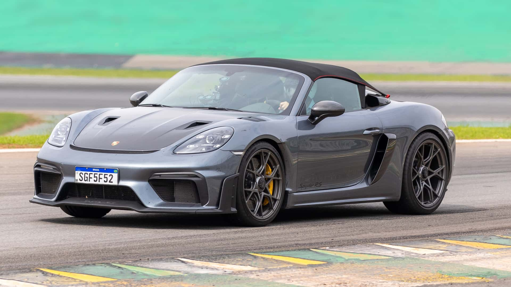
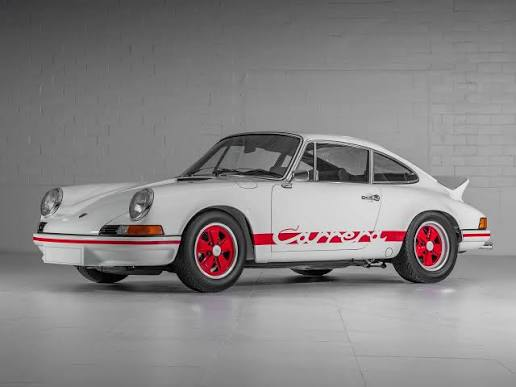
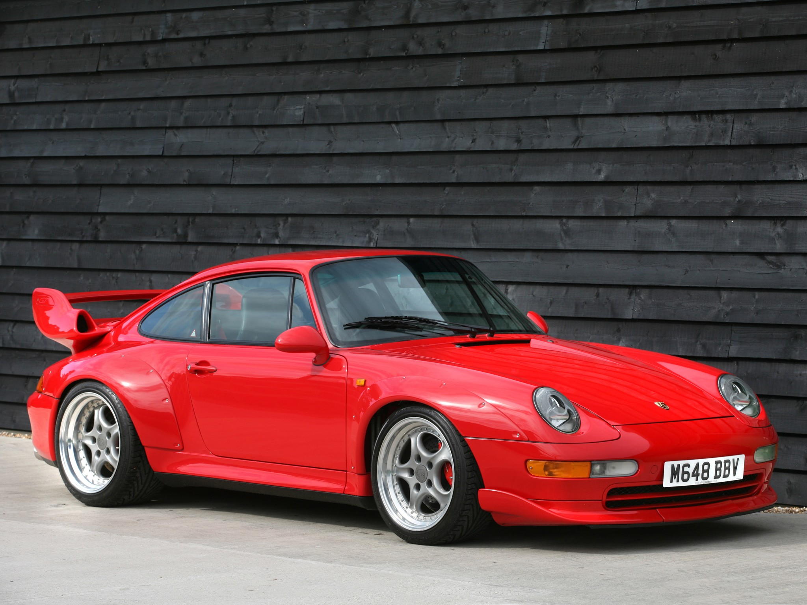
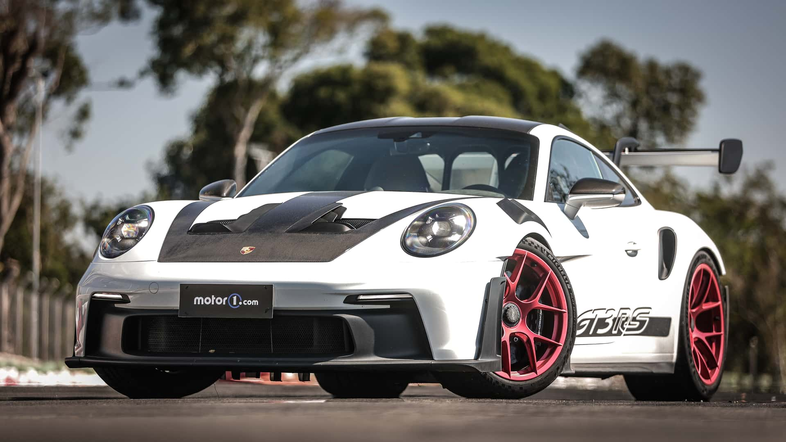
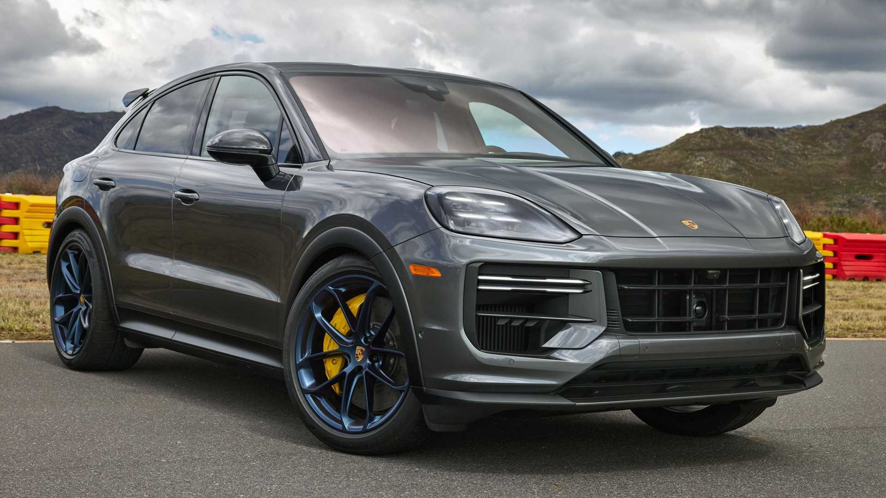
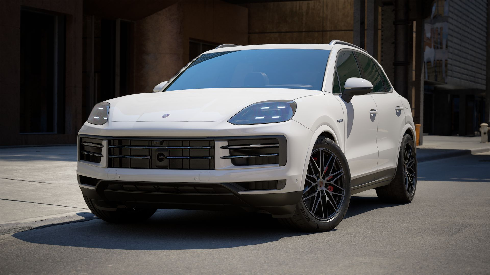
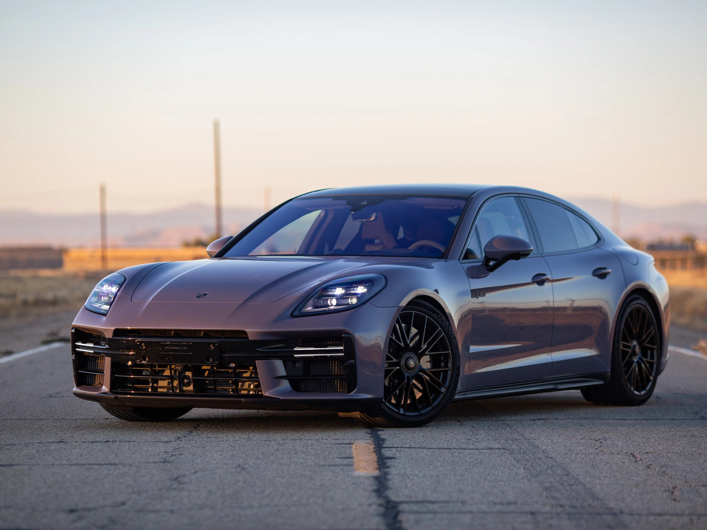
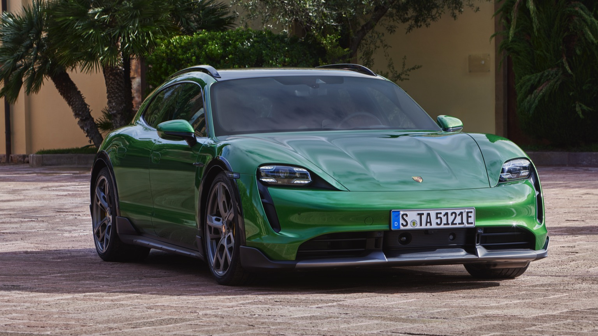
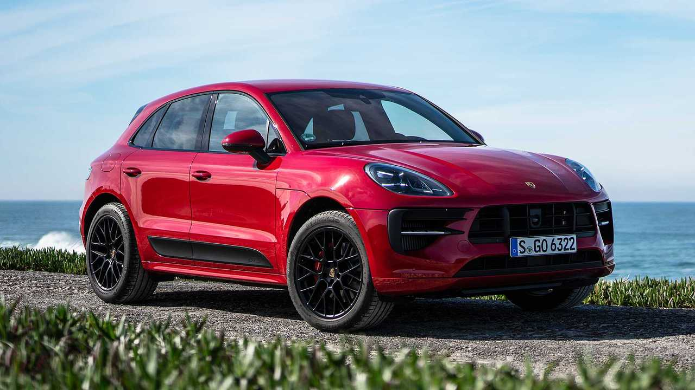

| Preço | R$ 1,2 ~ 1,5 milhão |
| Consumo Cidade | 5,8 km/L |
| 0 a 100 km/h | 3,4s |
| Cavalos | 500 cv |
| Torque | 45,9 kgfm |

| Preço | R$ 3,5 ~ 5 milhões |
| Consumo Cidade | 5,5 km/L |
| 0 a 100 km/h | 5,3s |
| Cavalos | 230 cv |
| Torque | 28 kgfm |

| Preço | R$ 8 ~ 12 milhões |
| Consumo Cidade | 4,5 km/L |
| 0 a 100 km/h | 3,9s |
| Cavalos | 430 cv |
| Torque | 55,1 kgfm |

| Preço | R$ 1,7 ~ 2,2 milhões |
| Consumo Cidade | 5,3 km/L |
| 0 a 100 km/h | 3,2s |
| Cavalos | 525 cv |
| Torque | 47,4 kgfm |

| Preço | R$ 600 ~ 950 mil |
| Consumo Cidade | 7,1 km/L |
| 0 a 100 km/h | 5,7s |
| Cavalos | 353 cv |
| Torque | 51 kgfm |

| Preço | R$ 830 ~ 980 mil |
| Consumo Cidade | 18,5 km/L |
| 0 a 100 km/h | 4,7s |
| Cavalos | 519 cv |
| Torque | 76,5 kgfm |

| Preço | R$ 850 mil ~ 1,1 milhão |
| Consumo Cidade | 19,2 km/L (com auxílio) |
| 0 a 100 km/h | 3,7s |
| Cavalos | 544 cv |
| Torque | 76,5 kgfm |

| Preço | R$ 1,1 ~ 1,3 milhões |
| Consumo Cidade | 2,7 km/kWh ( ~ 22 km/L) |
| 0 a 100 km/h | 2,9s |
| Cavalos | 761 cv |
| Torque | 107 kgfm |

| Preço | R$ 480 ~ 560 mil |
| Consumo Cidade | 7,4 km/L |
| 0 a 100 km/h | 4,7s |
| Cavalos | 380 cv |
| Torque | 53 kgfm |